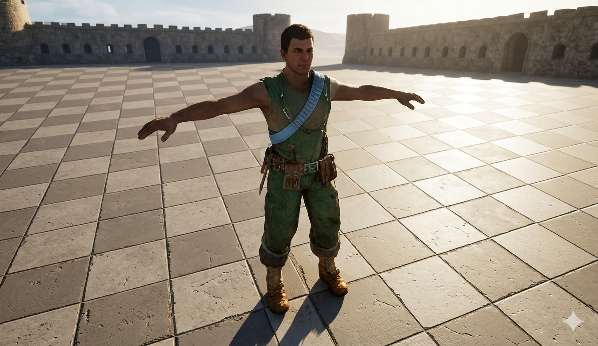
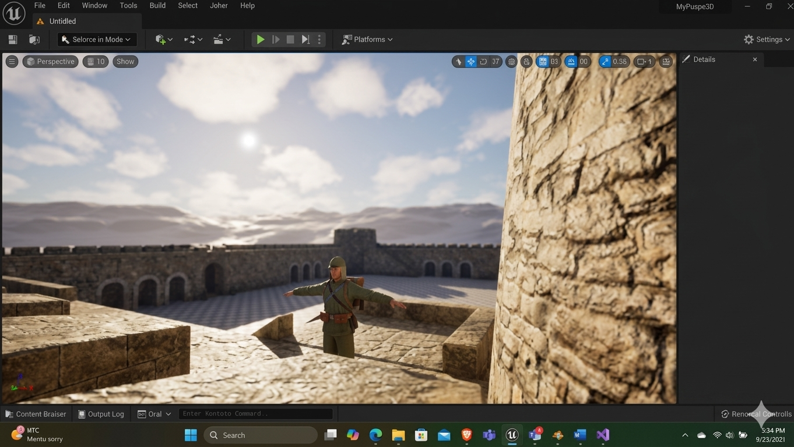
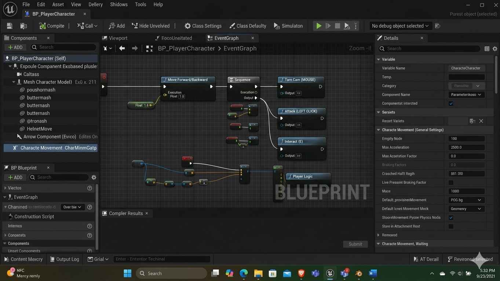

Dezvoltarea personajului principal a presupus integrarea unui mesh solid și complex, configurat riguros din punct de vedere geometric pentru a susține deformații naturale în timpul mișcării. Personajul beneficiază de un sistem complet de animații care controlează stările de repaus (Idle), deplasare și acțiuni speciale. Arhitectura vizuală profită de tehnologia Lumen din Unreal Engine 5, oferind o iluminare globală dinamică excelentă și umbre realiste proiectate pe suprafața mediului de test, aspect crucial pentru fidelitatea vizuală a prototipului.

Inamicii sunt guvernați de o logică clasică de inteligență artificială, implementată prin intermediul componentelor de percepție. Comportamentul lor este împărțit pe mai multe straturi senzoriale autonome:

Întregul nucleu funcțional al controlului și interacțiunilor este dezvoltat vizual în Event Graph-ul caracterului, folosind sistemul de Blueprints Scripting. Structura folosește noduri dedicate pentru interpretarea input-ului de la tastatură și mouse. Logica sortează direcțiile de mișcare (axa longitudinală și laterală pentru deplasarea de tip WASD), controlul rotației camerei la persoana a treia (Third-Person Cam Control) și maparea acțiunilor de interacțiune și atac prin execuții secvențiale optimizate, asigurând un gameplay fluid și lipsit de latențe.
